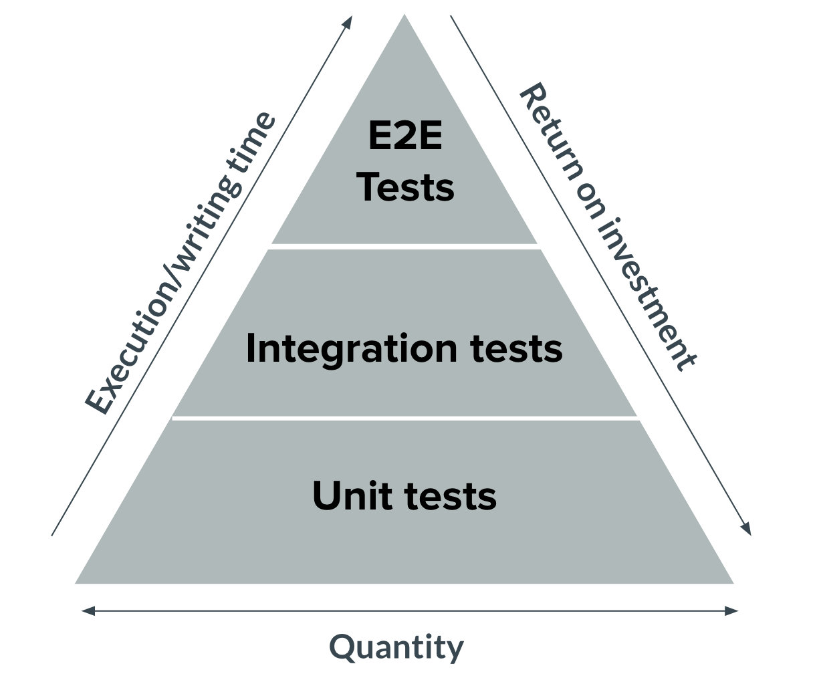
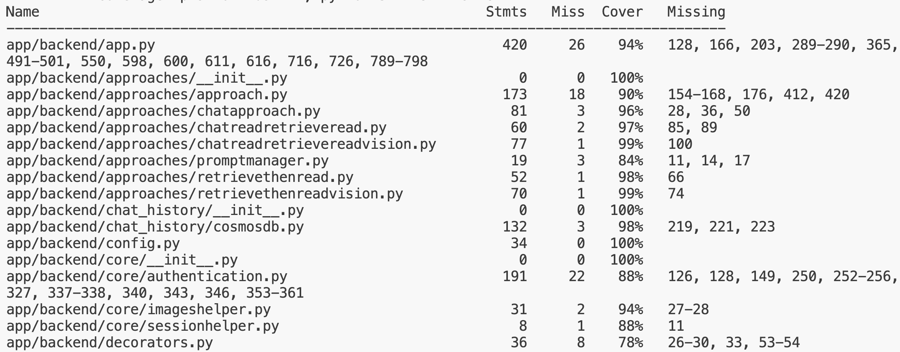
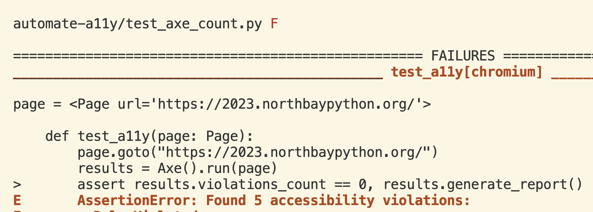
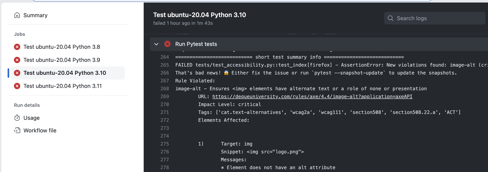

Testing Flask and Quart apps
with Playwright
Pamela Fox

About me

Python Cloud Advocate at Microsoft
Formerly: UC Berkeley, Coursera, Khan Academy, Google
Find me online at:
| Mastodon | @pamelafox@fosstodon.org |
| BlueSky | @pamelafox.bsky.social |
| www.linkedin.com/in/pamela-s-fox/ | |
| GitHub | www.github.com/pamelafox |
| Website | pamelafox.org |
Testing
 +
+

Web Apps
Testing pyramid
Should you start at top or bottom? Start somewhere, atleast!
pytest: Testing at all levels
I start with pytest and add on pytest extensions like...
- pytest-flask: Provides live server fixture
- pytest-asyncio: Async tests
- pytest-snapshot: Snapshot testing
- pytest-cov: Code coverage
- pytest-playwright: Playwright tests
- pytest-axe-playwright-snapshot: Playwright + axe-core + snapshot testing
Unit tests with pytest
Unit tests are often easiest to write, with minimal mocking and setup needed.
@pytest.mark.asyncio
async def test_csvparser_single_row():
file = io.BytesIO(b"col1,col2,col3\nvalue1,value2,value3")
file.name = "test.csv"
csvparser = CsvParser()
pages = [page async for page in csvparser.parse(file)]
# Assertions
assert len(pages) == 1
assert pages[0].page_num == 0
assert pages[0].offset == 0
assert pages[0].text == "value1,value2,value3"
Integration tests with pytest
When testing a Quart/Flask app, we can use the test client to make requests to our app and check the responses.
@pytest.mark.asyncio
async def test_ask_rtr_text(client, snapshot):
response = await client.post(
"/ask",
json={
"messages": [{"content": "What do PMs do?", "role": "user"}],
},
)
assert response.status_code == 200
result = await response.get_json()
snapshot.assert_match(json.dumps(result, indent=4), "result.json")
Snapshot testing is a nice way to verify JSON responses stay the same.
Running the tests
Run the tests with:
python -m pytest --cov
Thanks to pytest-cov, we can also get a code coverage report:
E2E testing with
Playwright

Playwright: Getting started
Playwright is available for Python (plus other languages).
Install the package:
python3 -m pip install playwright
Install the browsers:
python3 -m playwright install --with-deps
Playwright: Rendering a webpage
Use either the sync or async API:
from playwright.sync_api import sync_playwright
with sync_playwright() as p:
browser = p.chromium.launch()
page = browser.new_page()
page.goto("https://flaskcon.com/2025/")
print(page.title())
browser.close()
You can use methods to interact with the webpage, like to click on a button or fill in a form.
Pytest + Playwright
The Playwright team provides a pytest plugin:
pip install pytest-playwright
The plugin provides a page fixture that gives you a Playwright page object.
from playwright.sync_api import Page, expect
def test_click_tickets(page: Page):
page.goto("https://flaskcon.com/2025/")
expect(page.get_by_role("main")).to_contain_text("We are in room 317")
expect(page.get_by_role("heading", name="Friday May 16, 2 PM -6 PM")).to_be_visible()
with page.expect_popup() as page1_info:
page.get_by_role("link", name="PyCon Development Sprints").click()
Running the tests
You can run the tests the standard way:
python3 -m pytest
But I suggest giving E2E test filenames a name that will not be auto-discovered by pytest, since E2E tests are slow. 🐢
Then, run them separately with:
python3 -m pytest tests/e2e.py
The plugin supports options like --headless, --browser.
Generating test code
Playwright has a codegen command that generates test code as you interact with the page.
Run it with:
python -m playwright codegen https://flaskcon.com/2025/
As you interact with the page, it will generate test code for you with the optimal page selectors.
Accessibility testing
Using axe-core to audit a11y issues
axe-core is a JS engine that detects accessibility issues.
Axe-core must be used on a rendered webpage in a browser; not just a static HTML file.
<!DOCTYPE html>
<html>
<head>
<title>Accessibility test</title>
</head>
<body>
<h1>Accessibility test</h1>
<img src="pamela_baby_donkey.png">
<script src="https://cdn.jsdelivr.net/npm/axe-core@4.7.2/axe.min.js"></script>
<script>
axe.run().then(results => {
console.log(results.violations);
})
</script>
</body>
</html>
Axe-core results
The results contains a list of violations, keyed by the rule ID.
[
{"id": "image-alt",
"impact": "critical",
"tags": ["cat.text-alternatives", "wcag2a", "wcag111", "section508",
"section508.22.a", "ACT", "TTv5", "TT7.a", "TT7.b"],
"description": "Ensures <img> elements have alternate text or a role of none or presentation",
"help": "Images must have alternate text",
"helpUrl": "https://dequeuniversity.com/rules/axe/4.7/image-alt?application=axeAPI",
"nodes": [{
"html": "<img src=\"pamela_baby_donkey.jpg\" width=\"300\">",
"target": ["img"],
"failureSummary": "Fix any of the following:\nElement does not have an alt attribute\n aria-label attribute does not exist or is empty\n aria-labelledby attribute does not exist, references elements that do not exist or references elements that are empty\n Element has no title attribute\n Element's default semantics were not overridden with role=\"none\" or role=\"presentation\""
}]
}
...
]
Using axe-core with Playwright
Inject a local or remote JS file:
page.add_script_tag(url=
"https://cdn.jsdelivr.net/npm/axe-core@4.7.2/axe.min.js")
Use the evaluate method to run JS:
axe_results = page.evaluate("axe.run()")
When the result of an expression is a JS Promise, Playwright will wait for it to resolve and return the result.
All together: axe-playwright-python
I created axe-playwright-python,
a Python package that runs the axe-core JavaScript library on a Playwright Page.
python3 -m pip install -U axe-playwright-python
python3 -m playwright install --with-deps
from playwright.sync_api import sync_playwright
from axe_playwright_python.sync_playwright import Axe
with sync_playwright() as playwright:
browser = playwright.chromium.launch()
page = browser.new_page()
page.goto("https://pretalx.northbaypython.org/")
results = Axe().run(page)
print(results.response)
browser.close()
axe-core-python: Results report
The results object stores the full results as a dict but also includes methods for other results formats.
print(results.generate_report())
Found 3 accessibility violations:
color-contrast - Ensures the contrast between foreground and background colors meets WCAG 2 AA contrast ratio thresholds
URL: https://dequeuniversity.com/rules/axe/4.4/color-contrast?application=axeAPI
Impact Level: serious
Tags: ['cat.color', 'wcag2aa', 'wcag143']
Elements Affected:
1) Target: a[href$="nbpy-2023/"]
Snippet: <a href="/nbpy-2023/">North Bay Python 2023 (July 29th – 30th, 2023)</a>
Messages:
* Element has insufficient color contrast of 3.06 (foreground color: #3aa57c, background color: #ffffff, font size: 12.0pt (16px), font weight: normal). Expected contrast ratio of 4.5:1
...
axe-core-python: Results snapshot
The snapshot format only includes violation rule names and counts.
print(results.generate_snapshot())
color-contrast (serious) : 2
empty-heading (minor) : 1
link-name (serious) : 1
(We'll see soon why that's a helpful format!)
Pytest + Playwright + axe-core
We can use axe-playwright-python in our Pytest tests to assert that there are no violations, and to generate a report if there are.
from axe_playwright_python.sync_playwright import Axe
from playwright.sync_api import Page
def test_a11y(page: Page):
page.goto("https://flaskcon.com/2025/")
results = Axe().run(page)
assert results.violations_count == 0, results.generate_report()
Pytest + Playwright + axe-core: Results
When we run the test, we get a report of the violations.
python3 -m pytest test_axe_count.py
def test_a11y(page: Page):
page.goto("https://flaskcon.com/2025/")
results = Axe().run(page)
> assert results.violations_count == 0, results.generate_report()
E AssertionError: Found 5 accessibility violations:
E image-alt - Ensures  elements have alternate text or a role of none or presentation
E URL: https://dequeuniversity.com/rules/axe/4.4/image-alt?application=axeAPI
...
elements have alternate text or a role of none or presentation
E URL: https://dequeuniversity.com/rules/axe/4.4/image-alt?application=axeAPI
...
But nobody's perfect: most webpages will have > 0 violations. What to do? 🤔
📸 Snapshot testing 🧪
What is snapshot testing?
Snapshot testing is a way to test that the output of a function matches a previously saved snapshot.
Example using pytest-snapshot:
def emojify(s):
return s.replace('love', '❤️').replace('python', '🐍')
def test_function_output_with_snapshot(snapshot):
snapshot.assert_match(emojify('I love python'), 'snapshot.txt')
The first time we run the test, it will save the output to a file.
The next time we run the test, it will compare the output to that file.
We check snapshots into source control to track them over time.
Snapshot testing + axe-core
We can save the axe-core snapshots and check them into source control.
That way, we can see if the violations change over time.
Less violations: 👍 Update the snapshot!
More violations: 😱 Revert that change!
🙏🏼 Kudos to Michael Wheeler from UMich and their talk on Automated Web Accessibility Testing for the idea of using snapshot testing with axe-core.
Playwright + axe-core + snapshot testing
To make it as easy as possible, I made a pytest plugin that combines Playwright, axe-core, and snapshot testing.
python3 -m pip install pytest-axe-playwright-snapshot
python3 -m playwright install --with-deps
A test from a Flask app:
from flask import url_for
from playwright.sync_api import Page
def test_index(page: Page, axe_pytest_snapshot):
page.goto(url_for("index", _external=True))
axe_pytest_snapshot(page)
Requires pytest-flask to run a local server for the tests.
Running the snapshot tests
First run: (saves the snapshot)
python3 -m pytest --snapshot-update
Saved to snapshots/test_violations/chromium/snapshot.txt:
color-contrast (serious) : 2
empty-heading (minor) : 1
link-name (serious) : 1
Subsequent runs: (compares new snapshot to old.)
python3 -m pytest
Only update the snapshots if you're okay with the change in violations.
Test results: New accessibility issue
If there are violations in the new snapshot that weren't in the old, the test will fail with a message like this:
E AssertionError: New violations found: html-has-lang (serious)
E That's bad news! 😱 Either fix the issue or run `pytest --snapshot-update` to update the snapshots.
E html-has-lang - Ensures every HTML document has a lang attribute
E URL: https://dequeuniversity.com/rules/axe/4.4/html-has-lang?application=axeAPI
E Impact Level: serious
E Tags: ['cat.language', 'wcag2a', 'wcag311', 'ACT']
E Elements Affected:
E 1) Target: html
E Snippet: <html>
E Messages:
E * The <html> element does not have a lang attribute
Test results: Fixed accessibility issue
If there are less violations in the new snapshot than the old one, the test will also fail, but with a happy message like this:
E AssertionError: Old violations no longer found: html-has-lang (serious).
E That's good news! 🎉 Run `pytest --snapshot-update` to update the snapshots.
Continuous Testing
GitHub Actions
Don't allow merges if there are any test failures or coverage goes down.
Smoke Tests
Once you have Playwright tests, you can run them against the deployed version of your app.
python3 -m pytest --exitfirst src/tests/smoke/smoketests.py --live-server-url $URI
Thank you!
Grab the slides @ pamelafox.github.io/my-py-talks/testing-apps-playwright
Example repos with Pytest + Playwright:
- github.com/Azure-Samples/azure-search-openai-demo
- github.com/pamelafox/pamelafox-site: Includes a11y tests
- github.com/pamelafox/flask-db-quiz-example: Includes a11y snapshot tests
Find me online at:
| Mastodon | @pamelafox@fosstodon.org |
| BlueSky | @pamelafox.bsky.social |
| www.linkedin.com/in/pamela-s-fox/ | |
| GitHub | www.github.com/pamelafox |
| Website | pamelafox.org |
Any questions?